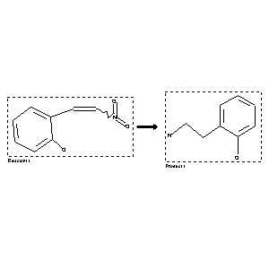

 |
| FA | RX(1); FLST(1); RX(2) |
Reaction (1 of 1)
| Reaction ID | 290414 |
| Reactant BRN | 1946772 |
| Reactant | b-Nitro-2-oxy-styrol |
| Product BRN | 1210320 |
| Product | 2-(2-amino-ethyl)-phenol |
| No. of Reaction Details | 2 |
Reaction Details (1 of 1)
| Reaction Classification | Preparation |
| Other Conditions | bei der Reduktion an einer Blei-Kathode |
| Comment | Handbook |
| Citation Pointer | 2249436; Journal; Kondo; Tanaka; YKKZAJ; Yakugaku Zasshi; 52; 1932; 608,610; dtsch. Ref. S. 74;; CHZEA6; Chem.Zentralbl.; GE; 103; II; 1932; 2449; |
Reaction Details (2 of 1)
| Reaction Classification | Preparation |
| Reagent | platinum; sulfuric acid; acetic acid |
| Other Conditions | Hydrogenation |
| Comment | Handbook |
| Citation Pointer | 1568731; Journal; Hahn; Stiehl; CHBEAM; Chem.Ber.; 71; 1938; 2154, 2161; |
Reference (1 of 2)
| Citation Number | 1568731 |
| Document Type | Journal |
| Authors | Hahn; Stiehl |
| CODEN | CHBEAM |
| Journal Title | Chem.Ber. |
| (Series) Volume | 71 |
| Publication Year | 1938 |
| Page | 2154, 2161 |
Reference (2 of 2)
| Citation Number | 2249436 |
| Document Type | Journal |
| Authors | Kondo; Tanaka |
| CODEN | YKKZAJ; CHZEA6 |
| Journal Title | Yakugaku Zasshi; Chem.Zentralbl. |
| Language Code | GE |
| (Series) Volume | 52; 103 |
| Number | II |
| Publication Year | 1932; 1932 |
| Page | 608,610; dtsch. Ref. S. 74;; 2449 |